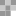
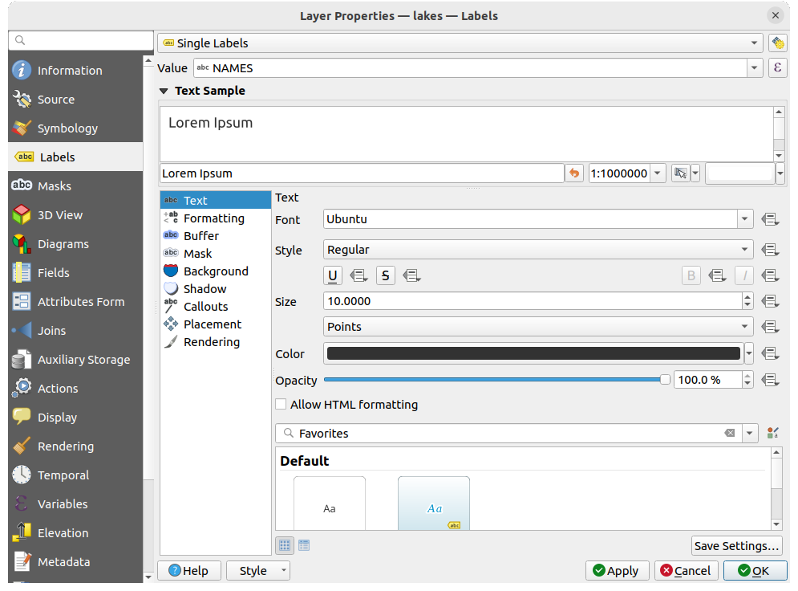

重要
翻訳は あなたが参加できる コミュニティの取り組みです。このページは現在 100.00% 翻訳されています。
5. 最初のステップ
この章では、QGIS のインストール、QGIS サンプルデータのダウンロードと、ラスタとベクタデータを表示する簡単な最初のセッションの実行について簡単に説明します。
5.1. QGISのインストール
QGISプロジェクトでは、QGISをインストールするためのさまざまな方法をお使いのプラットフォームに応じて提供しています。
5.1.1. バイナリからインストールする
 MS Windowsおよび
MS Windowsおよび  macOS用では、標準インストーラが提供されています。 GNU / Linux各種
macOS用では、標準インストーラが提供されています。 GNU / Linux各種  向けには、バイナリパッケージ（rpmおよびdeb）またはソフトウェアリポジトリが提供されています。
向けには、バイナリパッケージ（rpmおよびdeb）またはソフトウェアリポジトリが提供されています。
お使いのオペレーティングシステム向けの更なる情報と手順については https://download.qgis.org を参照して下さい。
5.1.2. ソースからのインストール
QGIS をソースからビルドする必要がある場合には、インストール手順を参照してください。これは INSTALL というファイル名でQGISのソースコードとともに配布されています。オンラインで https://github.com/qgis/QGIS/blob/release-3_34/INSTALL.md でも参照できます。
開発中のバージョンではない、特定のリリースをビルドする場合は、上記のリンクの master をリリースブランチ（通常は release-X_Y という形式）に置き換えてください（インストール手順は異なる場合があります）。
5.1.3. 外部メディアへのインストール
QGISを（すべてのプラグインと設定を含めて）フラッシュドライブにインストールすることが可能です。 これは、 --profiles-path オプションを定義してデフォルトの user profile パスを上書きし、 QSettings ディレクトリを使用するように設定することで実現できます。 詳しい情報は、 システムの設定 セクションを参照して下さい。
5.1.4. サンプルデータのダウンロード
このユーザーガイドには、QGISサンプルデータセット（ Alaska dataset とも呼びます）に基づく例があります。サンプルデータは https://github.com/qgis/QGIS-Sample-Data/archive/master.zip からダウンロードし、このアーカイブをコンピュータの好きな場所に展開してください。
Alaska datasetには、このユーザーガイドのサンプルとスクリーンショットで使用されているすべてのGISデータが含まれています。また、小さなGRASSデータベースも含まれています。QGISサンプルデータセットの投影法は、フィートを単位とするAlaska Albers Equal Area図法です。EPSGコードは2964です。
PROJCS["Albers Equal Area",
GEOGCS["NAD27",
DATUM["North_American_Datum_1927",
SPHEROID["Clarke 1866",6378206.4,294.978698213898,
AUTHORITY["EPSG","7008"]],
TOWGS84[-3,142,183,0,0,0,0],
AUTHORITY["EPSG","6267"]],
PRIMEM["Greenwich",0,
AUTHORITY["EPSG","8901"]],
UNIT["degree",0.0174532925199433,
AUTHORITY["EPSG","9108"]],
AUTHORITY["EPSG","4267"]],
PROJECTION["Albers_Conic_Equal_Area"],
PARAMETER["standard_parallel_1",55],
PARAMETER["standard_parallel_2",65],
PARAMETER["latitude_of_center",50],
PARAMETER["longitude_of_center",-154],
PARAMETER["false_easting",0],
PARAMETER["false_northing",0],
UNIT["us_survey_feet",0.3048006096012192]]
GRASS用のグラフィカルフロントエンドとしてQGISを使用したい場合には、GRASS GIS の公式ウェブサイト https://grass.osgeo.org/download/data/ でロケーションのサンプルのセレクション（例えば、Spearfish やSouth Dakota）を見つけることができます。
5.2. QGISの起動と終了
QGISは、他のアプリケーションと同じように、次のような方法で起動することができます。
- ではアプリケーションメニューを、 ではスタートメニューを、 では Dock を使って起動する
アプリケーションフォルダまたはデスクトップショートカットのアイコンをダブルクリックする
既存のQGIS プロジェクトファイル（拡張子は
.qgzまたは.qgs）をダブルクリックする（この操作では、プロジェクトも同時に開かれることに注意してください）コマンドプロンプトで
qgisとタイプする（QGIS のインストール場所が PATH に追加されているか、インストールフォルダに移動していることが前提となります）
QGISを終了させる場合は以下の方法を使用します。
- メニューから を選択する、またはショートカット Ctrlキー+Q を使用する
- メニューから を選択する、またはショートカット Cmd+Q を使用する
アプリケーションのメインインターフェースの右上角にある赤いバツ印を使う
5.3. サンプルセッション：ラスタレイヤとベクタレイヤを読み込む
さて、 QGISをインストール して サンプルデータセット が利用できるようになりましたので、初めてのサンプルセッションを実行してみましょう。この例ではラスタレイヤとベクタレイヤを表示します。以下のデータを使用します。
landcoverラスタレイヤ (qgis_sample_data/raster/landcover.img)lakesベクタレイヤ (qgis_sample_data/gml/lakes.gml)
qgis_sample_data はデータセットを展開したフォルダのパスを意味します。
QGISの起動と終了 で説明されている方法でQGISを起動します。
今回扱うデータは
Albers Equal Area図法で作成されています。このため、プロジェクトのCRSを適切に設定しましょう:QGISインターフェースの右下にある
 CRSを選択 ボタンをクリックします。プロジェクトのプロパティダイアログが開き、 CRS タブがアクティブになります。
CRSを選択 ボタンをクリックします。プロジェクトのプロパティダイアログが開き、 CRS タブがアクティブになります。 フィルタ のテキストボックスに
フィルタ のテキストボックスに 2964と入力します。NAD27 / Alaska AlbersというCRS名の行を選択します。
図 5.1 データの座標参照系を選択する
OK を押します
注釈
"概算transformが使用されました" というメッセージが表示されるかもしれませんが、今のところは無視するか閉じてしまってかまいません。
QGISにファイルを読み込みます:
 データソースマネージャを開く アイコンをクリックします。データソースマネージャがブラウザモードで開きます。
データソースマネージャを開く アイコンをクリックします。データソースマネージャがブラウザモードで開きます。qgis_sample_data/raster/フォルダに移動します。ERDAS IMGファイル  landcover.img を選択してダブルクリックします。データソースマネージャウィンドウは開いたままで、landcoverレイヤがバックグラウンドで追加されます。
図 5.2 新しいQGISプロジェクトにデータを追加する
lakesデータを読み込むには、
qgis_sample_data/gml/フォルダに移動し、 lakes.gml ファイルをQGISのメインダイアログにドラッグ＆ドロップします（または、上で述べたようにファイルをダブルクリックします）。
lakes.gml ファイルをQGISのメインダイアログにドラッグ＆ドロップします（または、上で述べたようにファイルをダブルクリックします）。追加するアイテムを選択 ダイアログが開き、ファイルをスキャンします。これは、
.gmlファイル形式が一度に複数のレイヤを保存できるためです。
図 5.3 ファイル内のレイヤの選択
今回は、単一の
 lakes があります。これを選択し、 レイヤを追加 ボタンを押します。
lakes があります。これを選択し、 レイヤを追加 ボタンを押します。レイヤ パネルにレイヤが追加されます。
データソースマネージャウィンドウを閉じます。
{kind=link}
レイヤ パネルにおいて、 lakes レイヤの横に  レイヤにCRSが設定されていません と表示されているのに気づくでしょう。これを解決しましょう。
レイヤにCRSが設定されていません と表示されているのに気づくでしょう。これを解決しましょう。
- アイコンをクリックします。 CRSセレクタ ダイアログが開きます。
上で行ったのと同様に、 NAD27 / Alaska Albers のCRSエントリを検索して選択します。
OK をクリックします。
これでプロジェクトで2つのレイヤを使用できるようになりました。レイヤはQGISによってランダムな配色がされています。では、 lakesレイヤをカスタマイズしてみましょう。
ナビゲーション ツールバーで
 拡大 ツールを選択します。
拡大 ツールを選択します。湖がある場所にズームします。
lakesレイヤをレイヤパネルでダブルクリックして レイヤプロパティ ダイアログを開きます。湖の色を変えるには、次のように操作します：
 シンボロジ タブをクリックします。
シンボロジ タブをクリックします。塗りつぶし色として青を選択します。

図 5.4 湖の色を選択する
OK を押します。マップキャンバスでは、湖が青色で表示されます。
湖の名前を表示するには、次のように操作します：
lakesレイヤで レイヤプロパティ ダイアログを再度開きます。 ラベル タブをクリックします。
ラベル タブをクリックします。ドロップダウンメニューで 単一定義(single) を選択すると、ラベリングが有効になります。
値 リストから
NAMESフィールドを選びます。 図 5.5 湖の名前を表示する
適用 を押します。すると名前が湖の領域の上に表示されます。
ラベルに白いバッファを追加してラベルを読みやすくするには、次のように操作します：
左のリストで バッファ タブをクリックします。
 テキストバッファを描画 にチェックを入れます。
テキストバッファを描画 にチェックを入れます。サイズを
3にします。適用 をクリックします。
出来栄えを確認して、必要なら値を変更します。
最後に OK をクリックして レイヤプロパティ ダイアログを閉じ、変更を適用します。

図 5.6 ラベルの周囲にバッファを表示する
今度は、地図の見栄えを整えるためにいくつか整飾を加えて、QGISからエクスポートしてみましょう。
メニューから を選択します。
開いたダイアログで、
スケールバーを有効にする にチェックを入れます。好みにあわせてダイアログのオプションを設定します。
適用 を押します。
同様に地図整飾メニューから、さらに方位記号、著作権ラベルなどのアイテムを、属性を調整して地図キャンバスに追加できます。
メニューから
 を選びます。
を選びます。開いたダイアログで 保存 を押します
ファイルの保存場所とフォーマットを選択し、再度 保存 を押して確定します。
変更を
.qgzプロジェクトファイルに保存する場合は、 を選択します。
を選択します。
図 5.7 整飾されたエクスポート地図を表示する
これでおしまいです。QGISでラスタレイヤやベクタレイヤを可視化し、設定を行った上で、他のソフトウェアで使用できる画像フォーマットで地図を作成するのがいかに簡単であるか理解できたと思います。引き続き、QGISで使える機能や特徴、設定、およびその使用方法についてさらに学んでいきましょう。
注釈
QGISをステップバイステップの演習で勉強したい場合は トレーニングマニュアル を参照して下さい。